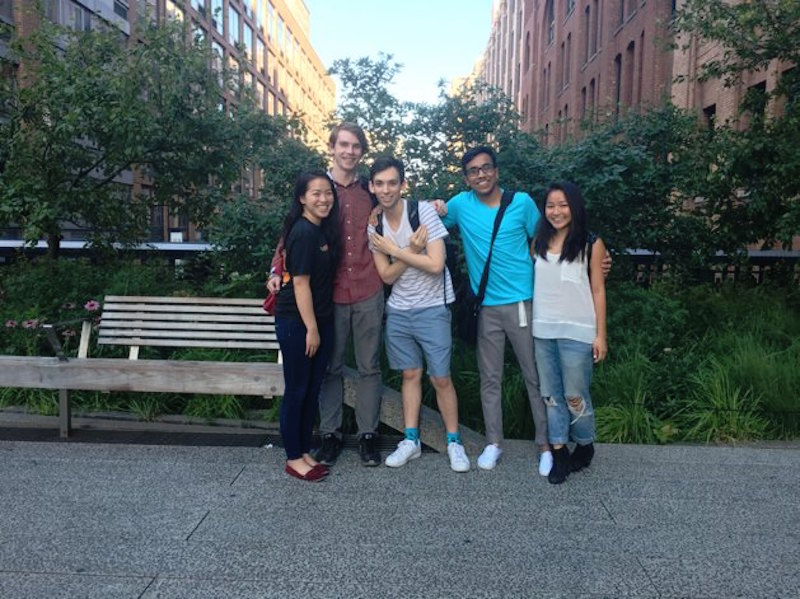
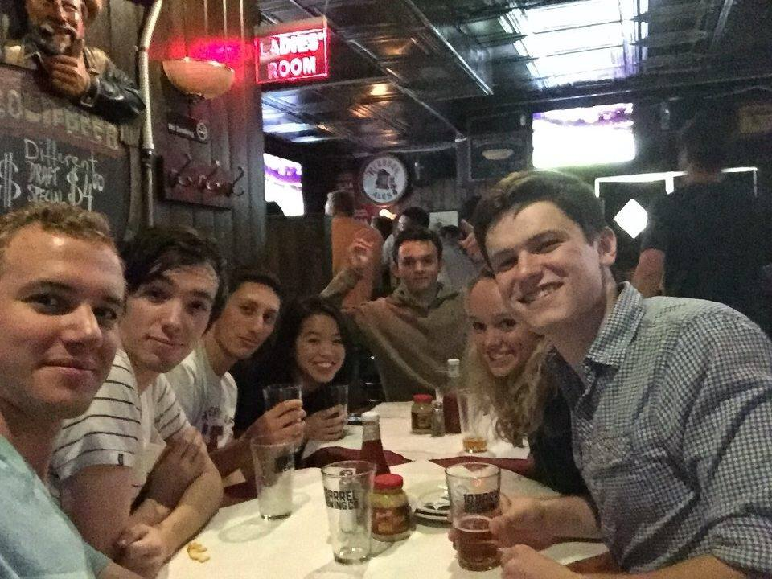
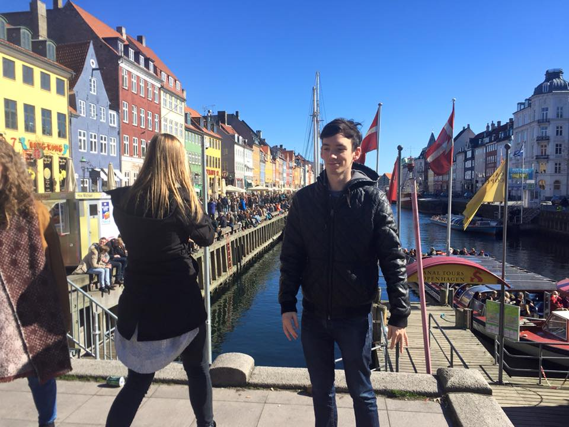
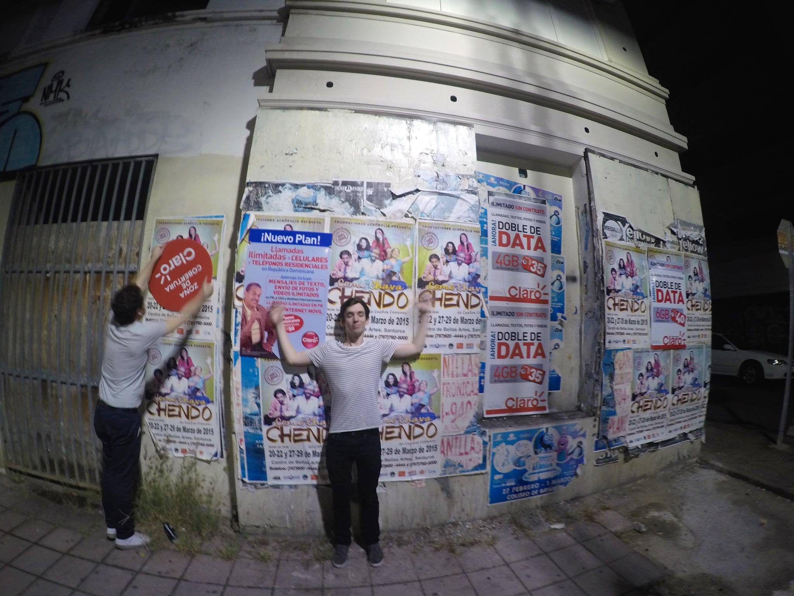

Blog
Internship at AppNexus
This summer I was a Software Engineering Intern on AppNexus's Data Platform as a Service team!
Read about my experience here.
 Study Abroad in Budapest
I spent the Spring of my junior year in College in Budapest. I learned a ton at the AIT program in Budapest and also travelled all over Europe! I spent time in Vienna, Amsterdam, Berlin, Oslo, Bergen, Copenhagen, Prague, and Barcelona!
About Me!
Welcome to my new and improved website, made using Foundation!
I am a Computer Science major at Columbia University. I lived almost my entire life before college in Studio City, California, a suburb of Los Angeles where life revolves around "hanging out" and "being chill". Now that I live in New York City, life is more fast-paced, but I still enjoy a "chill" day when I can.
At Columbia, I have enjoyed studying many different subjects, but my favorite subjects are Computer Science, Math, and philosophy. Outside of school, I like hip-hop, music, and playing basketball and golf.
Hope you enjoy my website!
